[10-5] 硬件I2C读写MPU6050 — 学习笔记
- 课程：江协科技《STM32入门教程-2023版 细致讲解 中文字幕》
- 视频：BV1th411z7sn?p=35，49:41（2981 秒）
- 素材：248 帧关键帧（每 12 秒，宽 1280px）+ PP-OCRv4 画面硬字幕 OCR（997 段，采集时字幕定位失败后强制条带重跑）；关键截图 16 张随笔记收录（源图在
vidsum_out/stm32_p35/frames/，站内图片在assets/images/stm32-35/） - 字幕情况：该集 B 站没有 CC/AI 字幕，文本由画面烧录的中文字幕 OCR 得到（source=subtitle-ocr）；错字主要是
I2C被识成「12C」（58 处）、MyI2C→「My12C」、引脚→「弓脚」、寄存器→「奇存」、死循环→「死盾环」、是否发送→「香发送」，并混入#####与示波器读数（Vmin=-21.929 mV等）——这些不是口述内容，已剔除/校正（清单见文末「存疑」）。 - 本集定位：这是模块 10 的代码课（下）——把上一集的
10-1 软件I2C读写MPU6050工程改造成10-2 硬件I2C读写MPU6050：删除 MyI2C 模块，只把MPU6050.c里的MyI2C_Init/WriteReg/ReadReg三处换成硬件 I2C 实现，应用层 main 与芯片配置逻辑完全不动；编译下载后现象与软件版一致，最后补上超时退出机制。结尾 49:37「本小节硬件 I2C 的代码部分到这里就结束了」。
一句话结论
本集不写新程序，而是「换底层」：上一集的 10-1 工程里，通信底层是 MyI2C.c（用 GPIO 手动翻转引脚模拟时序）；这一集把它整个删掉，改用 STM32 内部的 I2C2 外设——应用层 main 和 MPU6050 的配置/取数逻辑一行都不用改，因为软件 I2C 与硬件 I2C 的协议、时序、完成的任务完全一样，只是「谁来产生波形」不同（程序 vs 硬件电路）。接线不用改：SCL→PB10、SDA→PB11（与上集软件 I2C 完全相同）。为什么用 I2C2 而不是 I2C1：硬件 I2C 引脚固定，查引脚定义表 I2C1＝PB6/PB7（可重映射 PB8/PB9），但本板 PB6～PB9 被 OLED 占用，不方便接线；I2C2 没有重映射、只能 PB10/PB11，且SCL 必须接 PB10、SDA 必须接 PB11，不能互换（否则 I2C2 无法工作）；上集软件 I2C 特意选了这两个脚，所以同一套接线既能跑软件 I2C 又能跑硬件 I2C——画板时也可以这样留余地。初始化四步：① 开时钟（RCC_APB1PeriphClockCmd(RCC_APB1Periph_I2C2, ENABLE)——I2C1/I2C2 都在 APB1；GPIOB 在 APB2）② GPIO 配 GPIO_Mode_AF_OD 复用开漏（开漏是 I2C 协议要求，复用是把引脚控制权交给外设）③ I2C_Init 结构体六成员 ④ I2C_Cmd(I2C2, ENABLE)。结构体六成员：I2C_Mode = I2C_Mode_I2C（另有 SMBusDevice/SMBusHost）、I2C_ClockSpeed＝SCL 频率（0～100kHz 标准速度、100k～400kHz 快速，不能超过 400kHz；本集给 50000）、I2C_DutyCycle＝快速模式占空比（16:9 或 2:1，只在 >100kHz 时生效；本集选 2:1）、I2C_Ack = ENABLE（默认应答）、I2C_AcknowledgedAddress = I2C_AcknowledgedAddress_7bit、I2C_OwnAddress1 = 0x00（仅从机用、随便给不冲突即可）。写寄存器 MPU6050_WriteReg 的硬件版：I2C_GenerateSTART(I2C2, ENABLE) → 等 I2C_EVENT_MASTER_MODE_SELECT（EV5） → I2C_Send7bitAddress(I2C2, MPU6050_ADDRESS, I2C_Direction_Transmitter) → 等 I2C_EVENT_MASTER_TRANSMITTER_MODE_SELECTED（EV6） → I2C_SendData(I2C2, RegAddress) → 等 I2C_EVENT_MASTER_BYTE_TRANSMITTING（EV8） → I2C_SendData(I2C2, Data) → 等 I2C_EVENT_MASTER_BYTE_TRANSMITTED（EV8_2） → I2C_GenerateSTOP(I2C2, ENABLE)。读寄存器 MPU6050_ReadReg：前半段与写相同（START→EV5→地址+写→EV6→RegAddress→EV8），然后 I2C_GenerateSTART 产生重复起始（Sr） → EV5 → I2C_Send7bitAddress(..., I2C_Direction_Receiver) → EV6 必须用 I2C_EVENT_MASTER_RECEIVER_MODE_SELECTED（别和发送的混用） → 立刻 I2C_AcknowledgeConfig(I2C2, DISABLE) + I2C_GenerateSTOP(I2C2, ENABLE)（提前置 ACK=0、STOP=1，等收到数据再设就晚了） → 等 EV7（I2C_EVENT_MASTER_BYTE_RECEIVED） → Data = I2C_ReceiveData(I2C2) → 最后 I2C_AcknowledgeConfig(I2C2, ENABLE) 恢复默认应答。关键认知：硬件库函数是非阻塞的——只置位寄存器或写 DR 就返回，不管波形发完没，所以每个操作后必须用 while 等待对应事件；而软件 I2C 里的 Delay 是阻塞式的。坑与改进：大量 while 死循环等待可能让程序卡死 → 加超时退出（uint32_t Timeout = 10000; while (…) { Timeout --; if (Timeout == 0) { break; } }），并进一步封装成 MPU6050_WaitEvent(I2C_TypeDef* I2Cx, uint32_t I2C_EVENT) 替换所有 I2C_CheckEvent（作者自认用 break 无法结束外层函数是个小缺点）；实际项目在超时处还应该做错误处理（打日志/复位/紧急停机）。现象：与软件版完全一致——ID 读出 0x68，下面是 6 个加速度/角速度数据。
0. 本集定位：代码课（改造三条底层函数），无新应用逻辑
- 本集不是从零写程序：复制
10-1 软件I2C读写MPU6050→ 改名10-2 硬件I2C读写MPU6050，然后删掉 MyI2C 模块，只改MPU6050.c里的三处：MyI2C_Init→ 硬件 I2C2 初始化；WriteReg→ 硬件「指定地址写」；ReadReg→ 硬件「指定地址读」。
- 不改的部分：
main.c（应用层）、MPU6050的寄存器配置（MPU6050_Init里的 6 条WriteReg）与MPU6050_GetData取数逻辑——因为协议和时序一样，只是底层实现不同。 - 片尾 49:37：硬件 I2C 代码部分结束；无下集预告（模块 10 结束）。
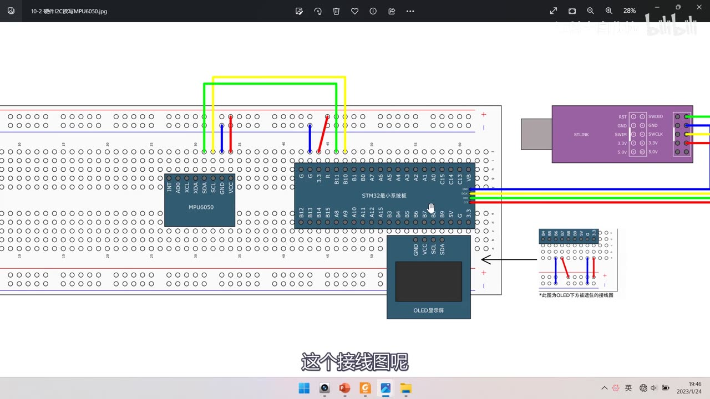
图 1：接线图 10-2 硬件I2C读写MPU6050——MPU6050 模块（AD0/XCL/XDA/SDA/SCL/GND/VCC）、STM32 最小系统板、OLED、ST-Link；SCL 飞线到 PB10、SDA 飞线到 PB11（与上集软件 I2C 完全相同的接线）；字幕「这个接线图呢」
1. 接线与引脚规划
- 接线：VCC/GND 供电，SCL→PB10、SDA→PB11——和上一集软件 I2C 的接线一模一样；
- 软件 I2C 的引脚可以任意指定（程序里操作哪个 GPIO 就接哪个），所以上集把引脚选在了 PB10/PB11；
- 硬件 I2C 的引脚固定，必须查引脚定义表的复用功能：
- I2C1：PB6=SCL、PB7=SDA，且可以重映射到 PB8/PB9；
- 但本板 PB6、PB7、PB8、PB9 这 4 个引脚在右下角被 OLED 占用，不太方便接线；
- 所以继续查表：I2C2：PB10=SCL、PB11=SDA，重映射栏里没有 I2C2，所以只能用 PB10/PB11；
- 而且 SCL 必须接 PB10、SDA 必须接 PB11，两者不能互换——「如果你私自把引脚改到其他位置，I2C2 是无法操作的」；
- 面包板接线不用改：上集软件 I2C 特意选了硬件 I2C2 的引脚，所以这两个脚上既可以使用软件 I2C，又可以使用硬件 I2C；
- 画板建议：以后设计电路如果不确定用硬件还是软件 I2C，可以直接接在硬件 I2C 的引脚上，给后面留选择的余地。
2. 复制工程、删除 MyI2C 模块
- 复制
10-1 软件I2C读写MPU6050→ 改名10-2 硬件I2C读写MPU6050（画面里是「- 副本」），打开工程先编译； - 区别只在通信底层：
MyI2C.c里都是用程序手动翻转引脚（软件 I2C）；有了硬件外设，底层可以交给硬件完成，所以MyI2C模块整个不再需要； - 删除模块的三步（保证工程树与工程目录一致）：
- 在文件选项卡里对
MyI2C.c/.h右键 → Close； - 在工程树里对两个文件右键 → Remove；
- 到工程目录的 Hardware 文件夹里把
MyI2C.c/.h删掉；
- 在文件选项卡里对
- 回到 Keil，
MPU6050.c里原来调用 MyI2C 的代码（#include "MyI2C.h"、WriteReg、ReadReg、MyI2C_Init）先注释掉（便于对照），基于通信层的芯片配置与取数逻辑不动。
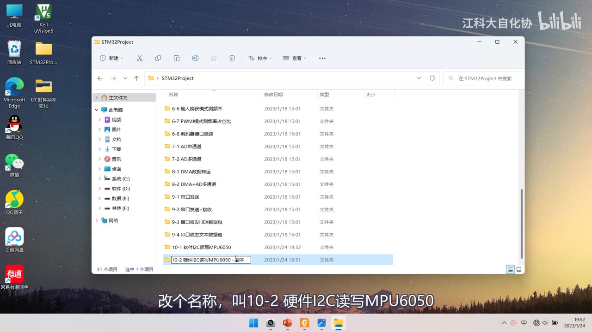
图 2：资源管理器里的工程目录——选中 10-2 硬件I2C读写MPU6050 - 副本（正在改名）；字幕「改个名称，叫10-2 硬件I2C读写MPU6050」
3. 硬件 I2C 初始化
初始化四步与之前外设的套路一样：
- 开时钟：I2C1/I2C2 都是 APB1 外设 →
RCC_APB1PeriphClockCmd(RCC_APB1Periph_I2C2, ENABLE)；GPIO 是 APB2 →RCC_APB2PeriphClockCmd(RCC_APB2Periph_GPIOB, ENABLE)； - GPIO 初始化：
GPIO_Mode_AF_OD（复用开漏）、GPIO_Pin_10 | GPIO_Pin_11、GPIO_Speed_50MHz、GPIO_Init(GPIOB, &GPIO_InitStructure)；- 为什么是「复用开漏」：开漏是 I2C 协议的设计要求；复用是把 GPIO 的控制权交给硬件外设（软件 I2C 时是程序控制引脚，用通用开漏
Out_OD；硬件 I2C 要用AF_OD）；
- 为什么是「复用开漏」：开漏是 I2C 协议的设计要求；复用是把 GPIO 的控制权交给硬件外设（软件 I2C 时是程序控制引脚，用通用开漏
- 结构体配置 I2C2：
I2C_InitTypeDef I2C_InitStructure;引出六个成员 →I2C_Init(I2C2, &I2C_InitStructure); I2C_Cmd(I2C2, ENABLE);使能外设。
void MPU6050_Init(void)
{
/* 硬件 I2C2 初始化（替换原 MyI2C_Init） */
RCC_APB1PeriphClockCmd(RCC_APB1Periph_I2C2, ENABLE);
RCC_APB2PeriphClockCmd(RCC_APB2Periph_GPIOB, ENABLE);
GPIO_InitTypeDef GPIO_InitStructure;
GPIO_InitStructure.GPIO_Mode = GPIO_Mode_AF_OD; /* 复用开漏 */
GPIO_InitStructure.GPIO_Pin = GPIO_Pin_10 | GPIO_Pin_11;
GPIO_InitStructure.GPIO_Speed = GPIO_Speed_50MHz;
GPIO_Init(GPIOB, &GPIO_InitStructure);
I2C_InitTypeDef I2C_InitStructure;
I2C_InitStructure.I2C_Mode = I2C_Mode_I2C;
I2C_InitStructure.I2C_ClockSpeed = 50000;
I2C_InitStructure.I2C_DutyCycle = I2C_DutyCycle_2;
I2C_InitStructure.I2C_Ack = I2C_Ack_Enable;
I2C_InitStructure.I2C_AcknowledgedAddress = I2C_AcknowledgedAddress_7bit;
I2C_InitStructure.I2C_OwnAddress1 = 0x00;
I2C_Init(I2C2, &I2C_InitStructure);
I2C_Cmd(I2C2, ENABLE);
...
}
说明：
I2C_ClockSpeed与I2C_DutyCycle这两行在画面里被代码提示框挡住/只有口述（见存疑），本代码块按口述 19:00–22:30 与示波器实验结果整理：ClockSpeed = 50000（50kHz）、DutyCycle = 2:1。
3.1 I2C_Mode 与 I2C_ClockSpeed
I2C_Mode：三个可选值I2C_Mode_I2C、I2C_Mode_SMBusDevice、I2C_Mode_SMBusHost——本课程用 I2C；I2C_ClockSpeed：配置 SCL 时钟频率，数值越大传输越快；- 0～100kHz → 标准速度；100k～400kHz → 快速；最大只能 400kHz；
- 本集给 50000（50kHz），MPU6050 支持到 400kHz，所以还可以加大；
I2C_DutyCycle：只对 >100kHz 的快速模式生效（标准速度下固定 1:1 占空比），可选I2C_DutyCycle_16_9（低:高＝16:9） 与I2C_DutyCycle_2（低:高＝2:1），本集选 2:1。
3.2 为什么快速模式要改占空比（示波器实验）
作者用最终程序 + 示波器抓了各频率下的波形，解释得非常清楚：
- 50kHz：标准速度，占空比 1:1（50% 方波），波形很完美；数据位在 SCL 高电平期间被读取（波形上能读出
11010000）； - 100kHz：仍是标准速度，占空比仍 1:1；但注意细节——下降沿非常快、上升沿缓慢：因为 I2C 是开漏 + 弱上拉，输出低电平是「强下拉」（劲大、下降沿果断），输出高电平只是「释放」，靠上拉电阻「弹簧」把线拉回去（因此上升沿慢）；
- 101kHz：刚进入快速模式，占空比自动变成约 2:1（低电平变宽）——因为「低电平写数据、高电平读数据」，低电平期间要留时间让缓慢的上升沿完成翻转，所以快速模式下要多给低电平分配时间，「就像硬盘的写入速度一般低于读取速度」；
- 200kHz：时间轴更窄，上升沿的「弯弯」更加明显；
- 400kHz（快速模式上限）：SCL 还没完全回弹到高电平就被拉低去传下一位，整个 SCL 波形变成三角形——这个「弯弯」拖了后腿，限制了 I2C 总线的最大传输速度；
- 结论：标准速度占空比接近 1:1、快速模式接近 2:1；本程序是标准速度，所以占空比参数其实用不上。
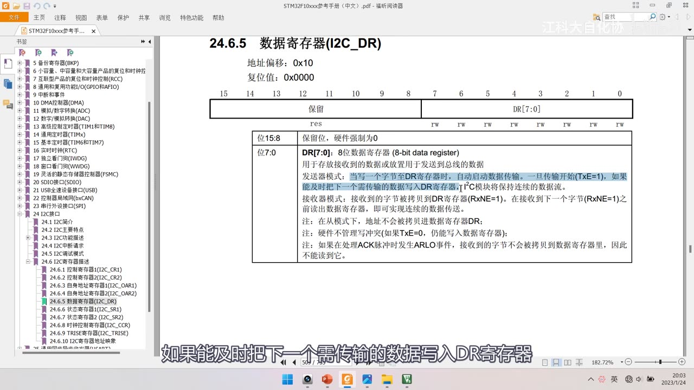
图 3：参考手册「24.6.5 数据寄存器(I2C_DR)」——地址偏移 0x10、复位值 0x0000；位 7:0 为 DR[7:0]（8 位数据寄存器）；说明：发送器模式下写 DR 自动启动数据传输、TxE=1 时及时写下一字节可保持连续数据流；接收器模式下收到的字节被拷贝到 DR、RxNE=1，下次接收前读走可连续；并注明从模式下地址不会被拷贝进 DR 等；字幕「如果能及时把下一个需传输的数据写入DR寄存器」
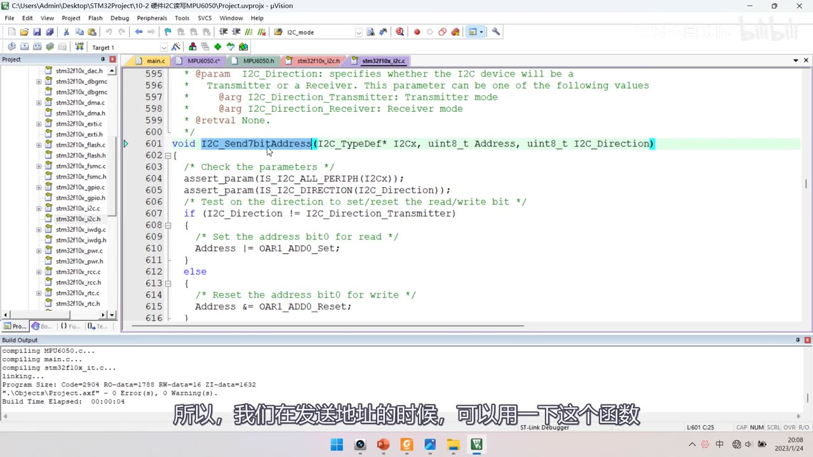
图 4：stm32f10x_i2c.c 中 I2C_Send7bitAddress 源码——void I2C_Send7bitAddress(I2C_TypeDef* I2Cx, uint8_t Address, uint8_t I2C_Direction)；if (I2C_Direction != I2C_Direction_Transmitter) { /* Set the address bit0 for read */ Address |= OAR1_ADD0_Set; } else { /* Reset the address bit0 for write */ Address &= OAR1_ADD0_Reset; }；字幕「所以，我们在发送地址的时候，可以用一下这个函数」
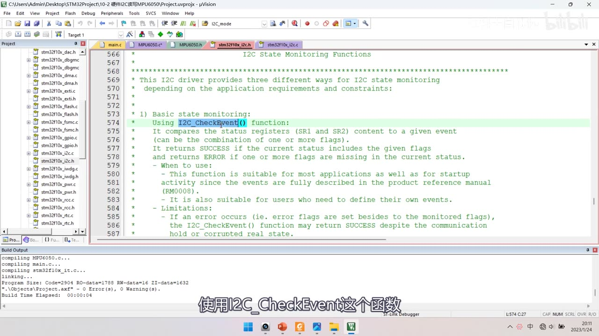
*图 5：stm32f10x_i2c.c 顶部「I2C State Monitoring Functions」注释——说明 I2C 驱动提供三种状态监控方式：1) Basic state monitoring：使用 I2C_CheckEvent()（把 SR1/SR2 与给定事件比较，返回 SUCCESS/ERROR），另有 2) Advanced（I2C_GetLastEvent）与 3) Flag-based（I2C_GetFlagStatus）；字幕「使用I2C_CheckEvent这个函数」*
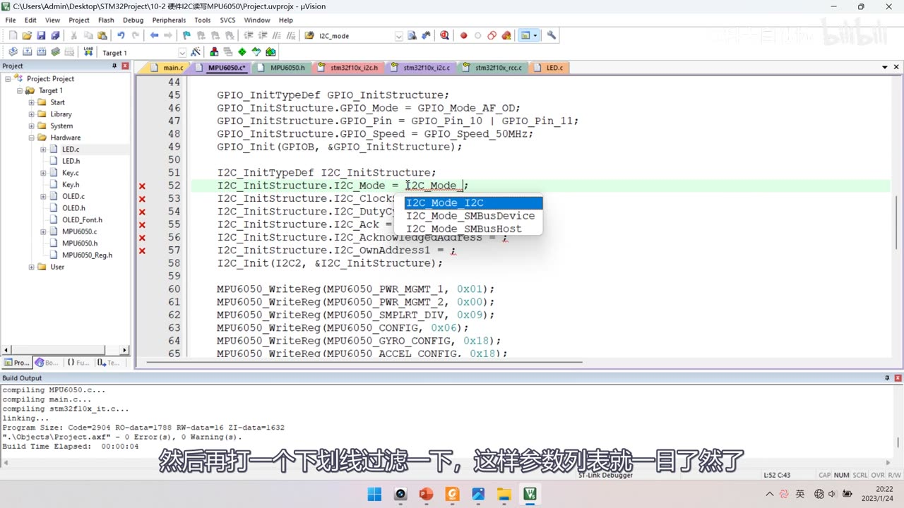
图 6：MPU6050.c 的硬件版初始化——上方 GPIO 部分 GPIO_Mode_AF_OD、GPIO_Pin_10 | GPIO_Pin_11、GPIO_Speed_50MHz、GPIO_Init(GPIOB, …)；I2C_InitTypeDef I2C_InitStructure; 后第 52 行 I2C_InitStructure.I2C_Mode = I2C_Mode_I2C; 并弹出参数提示框（I2C_Mode_I2C 高亮、I2C_Mode_SMBusDevice、I2C_Mode_SMBusHost）；下面 ClockSpeed/DutyCycle/Ack/AcknowledgedAddress/OwnAddress1 依次待填，之后 I2C_Init(I2C2, &I2C_InitStructure); 与 6 条 MPU6050_WriteReg(…)；字幕「然后再打一个下划线过滤一下，这样参数列表就一目了然了」
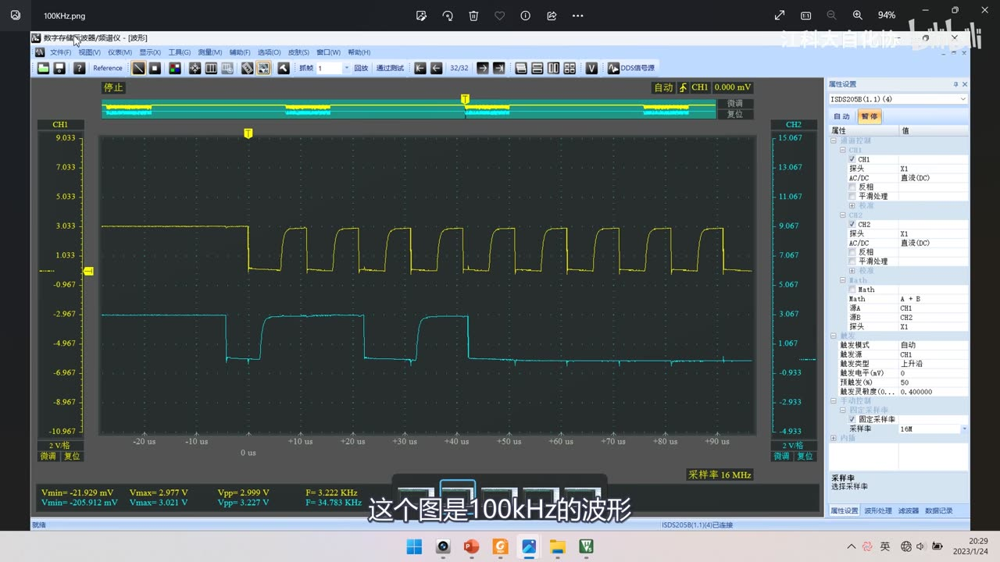
图 7：示波器实测 100kHz 波形（CH1 黄＝SCL、CH2 青＝SDA，采样率 16MHz）——标准速度下占空比仍约 1:1，可清楚看到*下降沿很陡、上升沿缓慢；字幕「这个图是100kHz的波形」*
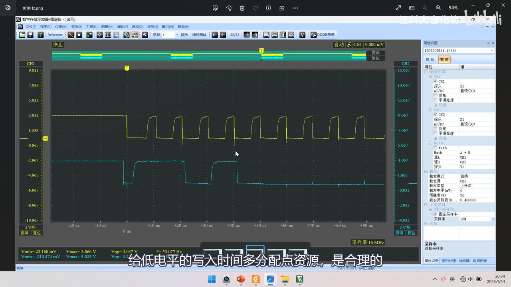
*图 8：示波器实测 101kHz 波形——刚进入快速模式，SCL 低电平明显变宽（约 2:1）；字幕「给低电平的写入时间多分配点资源，是合理的」*
4. 库函数与状态监控
打开 stm32f10x_i2c.h，本集用到的函数：
| 函数 | 作用 |
|---|---|
I2C_DeInit / I2C_Init / I2C_StructInit / I2C_Cmd |
老套路：复位/初始化/结构体默认值/使能 |
I2C_GenerateSTART |
置 CR1 的 START 位，产生起始条件 |
I2C_GenerateSTOP |
置 CR1 的 STOP 位，产生终止条件 |
I2C_AcknowledgeConfig |
配置 CR1 的 ACK 位：1 应答、0 非应答 |
I2C_SendData |
写 DR（发送数据） |
I2C_ReceiveData |
读 DR（接收数据） |
I2C_Send7bitAddress |
发送 7 位地址，内部自动按方向设置最低位读写位 |
I2C_CheckEvent |
基本状态监控：把 SR1/SR2 与给定事件比较（本集用这个，需掌握） |
I2C_GetLastEvent |
高级状态监控：把 SR1+SR2 拼成 16 位返回（了解即可） |
I2C_GetFlagStatus |
基于标志位的状态监控（老朋友，了解） |
- 应答位不用手动处理：发送数据时函数内部自带接收应答过程，接收数据时也自带发送应答过程——应答错误时硬件会用标志位/中断提示；
I2C_Send7bitAddress内部逻辑：方向为「发送」就把地址最低位清 0，方向为「接收」就置 1（源码见图 4）；如果嫌它多此一举，也可以自己用I2C_SendData直接发地址；- 三种状态监控选
I2C_CheckEvent（正好对应上一集 PPT 里的 EV 事件流程图）；I2C_CheckEvent返回SUCCESS表示事件已发生、ERROR表示未发生。
5. 写寄存器（硬件版 MPU6050_WriteReg）
void MPU6050_WriteReg(uint8_t RegAddress, uint8_t Data)
{
I2C_GenerateSTART(I2C2, ENABLE); /* 起始条件 */
while (I2C_CheckEvent(I2C2, I2C_EVENT_MASTER_MODE_SELECT) != SUCCESS); /* 等 EV5 */
I2C_Send7bitAddress(I2C2, MPU6050_ADDRESS, I2C_Direction_Transmitter); /* 地址 + 写 */
while (I2C_CheckEvent(I2C2, I2C_EVENT_MASTER_TRANSMITTER_MODE_SELECTED) != SUCCESS); /* 等 EV6 */
I2C_SendData(I2C2, RegAddress); /* 寄存器地址 */
while (I2C_CheckEvent(I2C2, I2C_EVENT_MASTER_BYTE_TRANSMITTING) != SUCCESS); /* 等 EV8 */
I2C_SendData(I2C2, Data); /* 数据 */
while (I2C_CheckEvent(I2C2, I2C_EVENT_MASTER_BYTE_TRANSMITTED) != SUCCESS); /* 等 EV8_2 */
I2C_GenerateSTOP(I2C2, ENABLE); /* 终止条件 */
}
- 为什么每一步都要 while 等待：硬件 I2C 库函数是非阻塞的——
I2C_GenerateSTART只是给 CR1 的 START 位置 1 就返回，到底波形发没发出去它不管；所以必须用I2C_CheckEvent等事件来确定上一步真的完成了（软件 I2C 里函数自带Delay，是阻塞式的，所以不用等）； - 事件与上一集流程图的对应：EV5＝起始条件已发出（
MASTER_MODE_SELECT，因为 STM32 默认从机、发完起始变主机）；EV6＝地址+读写位已发出且收到应答（MASTER_TRANSMITTER_MODE_SELECTED）；EV8＝字节正在发送（MASTER_BYTE_TRANSMITTING）；EV8_2＝字节已发送完毕（MASTER_BYTE_TRANSMITTED，BTF=1，两级缓存都空了）； - EV8_1 不用等：手册里的 EV8_1（可以写 DR）在库函数里没有对应的事件参数，所以 EV6 之后直接写 DR 即可；
- 末尾为什么等 EV8_2 而不是 EV8：EV8 表示「该字节正在发送、DR 已空」；EV8_2 表示「BTF=1、移位寄存器也空了」——只有等两级缓存全空才能安全产生停止条件。
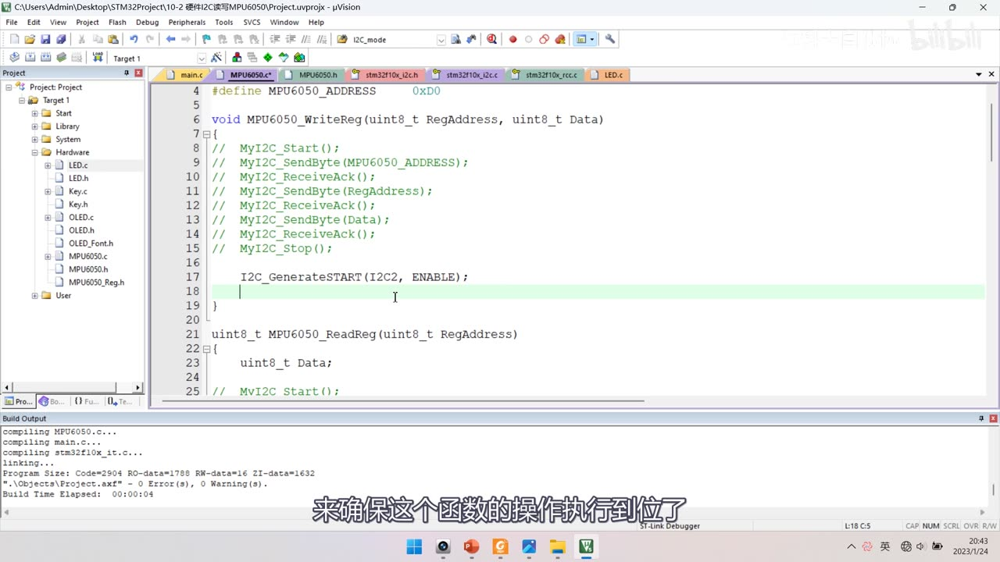
图 9：MPU6050.c 的 WriteReg 改造中——原来 6 行 MyI2C 调用全部注释（// MyI2C_Start(); … // MyI2C_Stop();），第 17 行新写 I2C_GenerateSTART(I2C2, ENABLE);（高亮，待补事件等待）；下面 ReadReg 里的 MyI2C 代码也被注释；字幕「来确保这个函数的操作执行到位了」
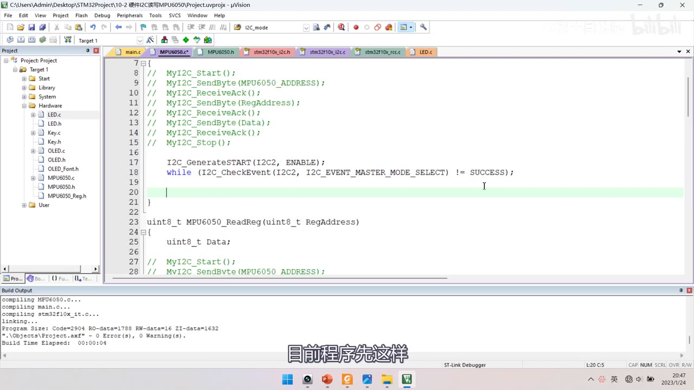
图 10：WriteReg 里新增的 EV5 等待——while (I2C_CheckEvent(I2C2, I2C_EVENT_MASTER_MODE_SELECT) != SUCCESS);（第 18 行）；字幕「目前程序先这样」
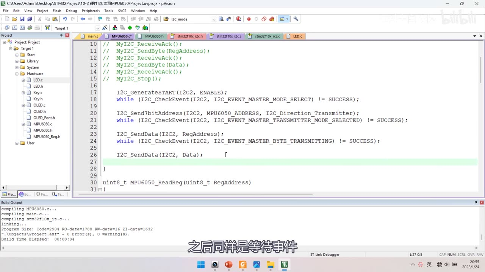
图 11：WriteReg 中段——I2C_Send7bitAddress(I2C2, MPU6050_ADDRESS, I2C_Direction_Transmitter);、while (I2C_CheckEvent(I2C2, I2C_EVENT_MASTER_TRANSMITTER_MODE_SELECTED) != SUCCESS);、I2C_SendData(I2C2, RegAddress);、while (I2C_CheckEvent(I2C2, I2C_EVENT_MASTER_BYTE_TRANSMITTING) != SUCCESS);、I2C_SendData(I2C2, Data);；字幕「之后同样是等待事件」
6. 读寄存器（硬件版 MPU6050_ReadReg）
uint8_t MPU6050_ReadReg(uint8_t RegAddress)
{
uint8_t Data;
/* 前半段：只指定地址（和 WriteReg 前半一样） */
I2C_GenerateSTART(I2C2, ENABLE);
while (I2C_CheckEvent(I2C2, I2C_EVENT_MASTER_MODE_SELECT) != SUCCESS);
I2C_Send7bitAddress(I2C2, MPU6050_ADDRESS, I2C_Direction_Transmitter);
while (I2C_CheckEvent(I2C2, I2C_EVENT_MASTER_TRANSMITTER_MODE_SELECTED) != SUCCESS);
I2C_SendData(I2C2, RegAddress);
while (I2C_CheckEvent(I2C2, I2C_EVENT_MASTER_BYTE_TRANSMITTED) != SUCCESS);
/* 重复起始 + 地址+读 */
I2C_GenerateSTART(I2C2, ENABLE);
while (I2C_CheckEvent(I2C2, I2C_EVENT_MASTER_MODE_SELECT) != SUCCESS);
I2C_Send7bitAddress(I2C2, MPU6050_ADDRESS, I2C_Direction_Receiver);
while (I2C_CheckEvent(I2C2, I2C_EVENT_MASTER_RECEIVER_MODE_SELECTED) != SUCCESS);
/* 只读 1 字节：提前设 ACK=0 与 STOP=1 */
I2C_AcknowledgeConfig(I2C2, DISABLE);
I2C_GenerateSTOP(I2C2, ENABLE);
while (I2C_CheckEvent(I2C2, I2C_EVENT_MASTER_BYTE_RECEIVED) != SUCCESS); /* 等 EV7 */
Data = I2C_ReceiveData(I2C2);
I2C_AcknowledgeConfig(I2C2, ENABLE); /* 恢复默认应答，便于以后扩展多字节 */
return Data;
}
说明：完整函数体在画面里是分段拼出来的（前半段、重复起始、收尾各一帧），这里按帧 + 口述整理为完整逻辑；
I2C_AcknowledgeConfig与I2C_GenerateSTOP的先后顺序以口述「先置 ACK=0、再设 STOP 请求」为准（见存疑）。
- 和写寄存器的区别：前半段一样（只指定寄存器地址），但地址发完后要转入读，就必须再来一次起始条件（重复起始 Sr），重新寻址并把读写位改成「读」；
- EV6 要换成接收模式的参数：发送时用
I2C_EVENT_MASTER_TRANSMITTER_MODE_SELECTED，接收时必须用I2C_EVENT_MASTER_RECEIVER_MODE_SELECTED——两个 EV6 参数名字很像，别混用； - 最绕的地方——提前设 ACK=0 与 STOP=1：在进入接收模式之后、数据还没收到时，就要把 ACK 置 0（非应答）、STOP 位置 1（申请停止）：
- 原因：应答位是在「字节收到之前」就发出去的——等你收到数据再想设非应答就晚了；
- 停止条件也不会截断当前字节：它会等当前字节接收完成后再产生停止波形，所以提前设置是安全的；
- 只读 1 个字节时的流程：EV6 之后立刻 ACK=0 + STOP；然后等 EV7（
I2C_EVENT_MASTER_BYTE_RECEIVED），此时数据已在 DR，读 DR 即可； - 最后恢复 ACK=ENABLE：本程序只读 1 字节、全程没给过应答，但这个形式还是要写——为了以后升级「指定地址读多个字节」时方便。
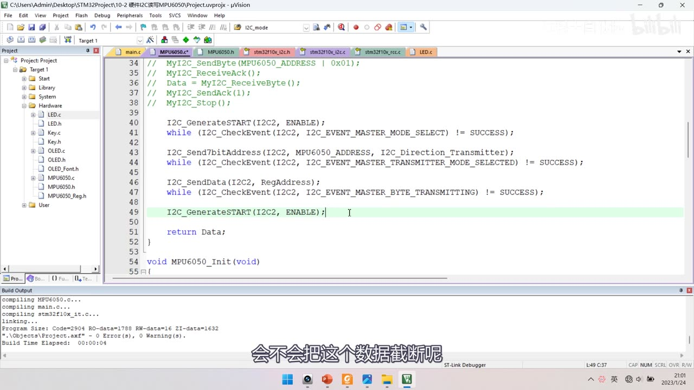
*图 12：ReadReg 前半段硬件化——注释的 MyI2C 段下面：I2C_GenerateSTART + EV5、I2C_Send7bitAddress(..., I2C_Direction_Transmitter) + EV6（MASTER_TRANSMITTER_MODE_SELECTED）、I2C_SendData(I2C2, RegAddress) + EV8（MASTER_BYTE_TRANSMITTING），第 49 行 I2C_GenerateSTART(I2C2, ENABLE);（重复起始，高亮）；字幕「会不会把这个数据截断呢」（中间态：此帧第 46 行是 MASTER_BYTE_TRANSMITTING，38:27 后改为 TRANSMITTED）*
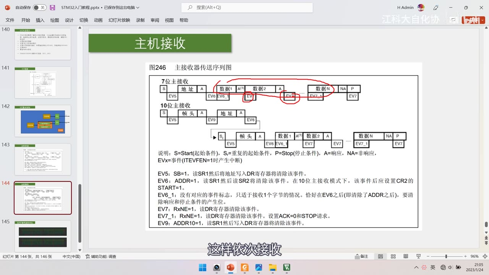
图 13：PPT「主机接收」图246（主接收器传送序列图）——7 位主接收：S→地址 A→数据1 A→数据2 A→…→数据N NA→P，下方 EV5、EV6、EV6_1、EV7、EV7、EV7_1、EV7；10 位主接收（含 Sr）；下方说明 EV5/EV6/EV6_1/EV7/EV7_1/EV9，红笔圈出 EV6_1/EV7/EV7_1 区域；字幕「这样依次接收」
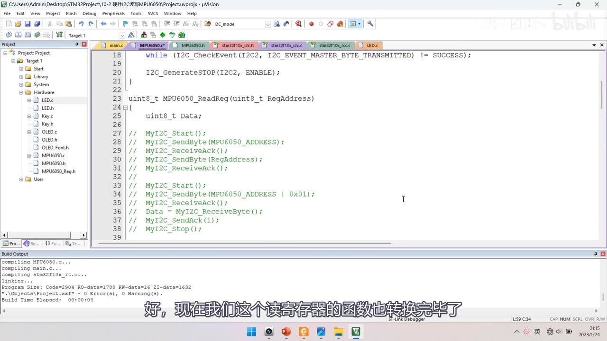
图 14：ReadReg 收尾——while (I2C_CheckEvent(I2C2, I2C_EVENT_MASTER_BYTE_TRANSMITTED) != SUCCESS);、I2C_GenerateSTOP(I2C2, ENABLE);，下面 ReadReg 里旧的 MyI2C 代码已全部注释；字幕「好，现在我这个读寄存器的函数也转换完毕了」
7. EV8 与 EV8_2 的选择、现象验证
- 实测结论：写
RegAddress之后，等TRANSMITTING（EV8）还是TRANSMITTED（EV8_2）都能用——因为调用起始条件后，如果有字节正在移位，起始条件会「延迟」到当前字节发送完毕才产生，不会把数据截断； - 两种写法的区别只是「等在哪」：用
TRANSMITTING，则等待发生在重复起始之后；用TRANSMITTED，则先等波形全部发完、再产生重复起始； - 保险起见：数据流的最后用
TRANSMITTED（本集 ReadReg 前半段与 WriteReg 末尾都用它）； - 编译下载后的现象：与软件 I2C 完全一致——OLED 显示 ID = 0x68，下面是 6 个加速度/角速度数据，转动模块数据变化正常。
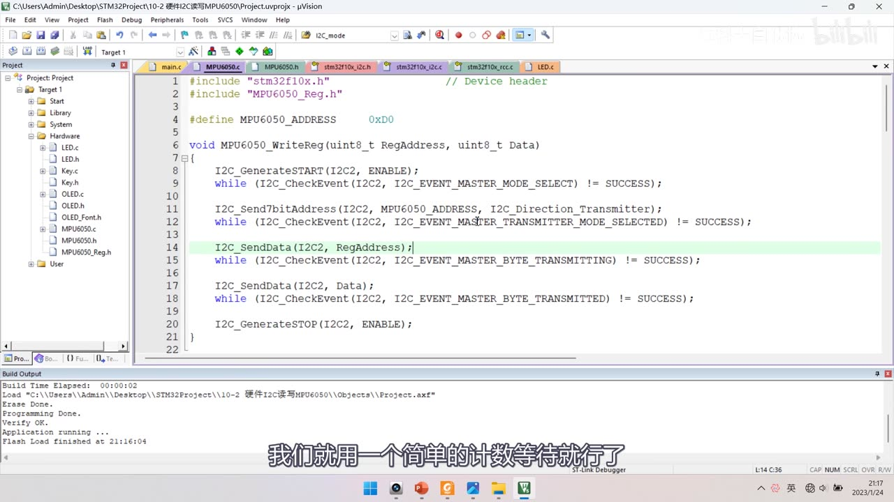
图 15：WriteReg 完整版（无超时）——I2C_GenerateSTART + EV5、I2C_Send7bitAddress(..., I2C_Direction_Transmitter) + EV6、I2C_SendData(I2C2, RegAddress);（高亮）+ EV8、I2C_SendData(I2C2, Data); + EV8_2、I2C_GenerateSTOP(I2C2, ENABLE);；字幕「我们就用一个简单的计数等待就行了」
8. 超时退出与 MPU6050_WaitEvent 封装
- 问题：程序里出现了大量
while死循环等待——一旦某个事件永远不产生（比如从机没接、总线被拉死），整个程序就卡死了，很危险； - 简单的超时机制（计次计时）：
uint32_t Timeout = 10000;
while (I2C_CheckEvent(I2C2, I2C_EVENT) != SUCCESS)
{
Timeout --;
if (Timeout == 0)
{
break; /* 超时，跳出循环（break 只跳出本层循环） */
}
}
break是跳出循环的关键字；return则能直接结束整个函数——两者区别要注意；- 循环 10000 次到底多久不确定（和主频/优化有关），实际取值要手动调；
- 进一步封装成
MPU6050_WaitEvent：
void MPU6050_WaitEvent(I2C_TypeDef* I2Cx, uint32_t I2C_EVENT)
{
uint32_t Timeout = 10000;
while (I2C_CheckEvent(I2Cx, I2C_EVENT) != SUCCESS)
{
Timeout --;
if (Timeout == 0)
{
break; /* 作者自认的小缺点：这里无法让外层函数 return */
}
}
}
- 把原来每个
while (I2C_CheckEvent(...))都换成MPU6050_WaitEvent(I2C2, 事件)，代码更整洁； - 小缺点：函数内部用
break只能结束这个子函数，外层函数无法直接return（作者说「不影响」）； - 实际项目建议：在超时退出的地方不能只 break，应该做错误处理——打印错误日志、系统复位、或紧急停机（涉及危险机械结构时），这样的代码才更健全安全。
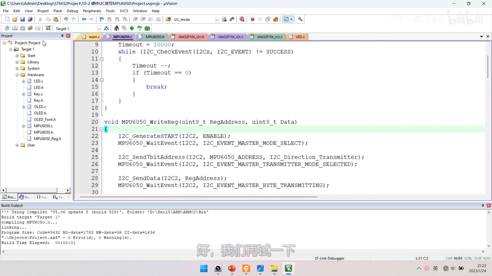
图 16：MPU6050_WaitEvent 封装——函数体内 Timeout = 10000;、while (I2C_CheckEvent(I2Cx, I2C_EVENT) != SUCCESS) { Timeout --; if (Timeout == 0) { break; } }；下方 MPU6050_WriteReg 已全面改用 MPU6050_WaitEvent(I2C2, I2C_EVENT_MASTER_MODE_SELECT); 等；字幕「好，我们我再试一下」
9. 软件 I2C vs 硬件 I2C（本集改造对照）
| 项 | 软件 I2C（10-1） | 硬件 I2C（10-2） |
|---|---|---|
| 通信底层 | MyI2C.c：GPIO 手动翻转 + Delay（阻塞） |
I2C2 外设：库函数 + 等事件（非阻塞） |
| 引脚 | 任意 GPIO（PB10/PB11） | 固定：I2C2 只能 PB10/PB11（不可互换） |
| GPIO 模式 | 通用开漏 Out_OD |
复用开漏 AF_OD |
| 起始/终止 | MyI2C_Start/Stop |
I2C_GenerateSTART/STOP |
| 发字节/收字节 | SendByte/ReceiveByte（含延时） |
I2C_SendData/ReceiveData + 等 EV 事件 |
| 应答 | SendAck/ReceiveAck |
库函数内部自动处理（I2C_AcknowledgeConfig 单独改） |
| 时钟 | 程序延时决定 | I2C_ClockSpeed 配置（本集 50kHz，可到 400kHz） |
| 应用层 | main 不变 | main 完全不变 |
| 现象 | ID=0x68 + 6 轴数据 | 完全相同 |
坑与易错点
- 必须用 I2C2 而不是 I2C1：本板 PB6～PB9 被 OLED 占用；I2C2 无重映射、只能 PB10/PB11。
- SCL=PB10、SDA=PB11 不能互换：改到其他引脚 I2C2 就无法工作。
- GPIO 必须配
GPIO_Mode_AF_OD（复用开漏）：Out_OD是软件 I2C 用的通用开漏，硬件 I2C 要复用。 - I2C 是 APB1 外设：
RCC_APB1Periph_I2C2；GPIO 是 APB2——两个时钟别写混。 - 硬件库函数是非阻塞的：每个操作后必须 while 等对应事件，否则时序全乱。
- EV6 分发送/接收两个参数：
MASTER_TRANSMITTER_MODE_SELECTED与MASTER_RECEIVER_MODE_SELECTED别混用。 - 读的最后一个字节要提前置 ACK=0 + STOP=1：收到数据再设就晚了；STOP 会等当前字节收完才生效。
- 末尾等 EV8_2（BTF=1）再 STOP：两级缓存都空了才能安全停止。
- EV8 与 EV8_2 实测都能用：起始条件会延迟到当前字节发完；但数据流末尾建议用
TRANSMITTED。 I2C_OwnAddress1 = 0x00是随便给的（本程序不做从机），不能当通用推荐值。I2C_DutyCycle只在 >100kHz 生效：标准速度固定 1:1，配了也没用。I2C_ClockSpeed不能超过 400kHz；50kHz 属标准速度。- 大量 while 死循环可能卡死程序：加超时退出；
break只能跳出本层循环，return才能结束整个函数。 MPU6050_WaitEvent用 break 是作者自认的小缺点（无法结束外层函数）；实际项目超时要打日志/复位/紧急停机。- 删模块要三处都删：文件选项卡 Close、工程树 Remove、工程目录删文件——否则工程树与目录不一致。
时间轴
| 时间 | 内容 |
|---|---|
| 0:02 | 本小节学习硬件 I2C 的代码部分 |
| 0:10 | 先看接线图，打开 10-2 的图片 |
| 0:26 | VCC 和 GND 接供电，SCL 接 PB10、SDA 接 PB11 |
| 0:33 | 软件 I2C 的通信引脚可以任意更改 |
| 0:47 | 硬件 I2C 的通信引脚不可以任意指定 |
| 0:58 | 查引脚定义表：用 I2C1 要接 PB6 和 PB7 |
| 1:03 | I2C1 可以重映射到 PB8 和 PB9 |
| 1:14 | 但本板 PB6～PB9 被 OLED 占用，不方便接线 |
| 1:25 | 继续查表：硬件 I2C2 的引脚 |
| 1:29 | 重映射栏里没有 I2C2，只能用 PB10 和 PB11 |
| 1:36 | 并且 SCL 对应 PB10、SDA 对应 PB11，不能互换 |
| 1:55 | 私自改引脚，I2C2 就无法操作 |
| 2:03 | 面包板接线和上一个代码一样，不用改 |
| 2:08 | 上一个软件 I2C 代码也特意选了硬件 I2C2 的引脚 |
| 2:29 | 画板时也可以这样，留硬件/软件 I2C 的选择余地 |
| 2:41 | 接下来写代码，复制 10-1 软件 I2C 的工程 |
| 2:48 | 改名为 10-2 硬件 I2C 读写 MPU6050，先编译 |
| 3:15 | 应用层和现象不变，区别只在通信底层 |
| 3:22 | 底层 MyI2C.c 是手动翻转引脚，现在交给硬件完成 |
| 3:44 | 删除 MyI2C 模块：文件选项卡里 Close |
| 3:56 | 工程树里 Remove，两个文件都移除 |
| 4:07 | 到 Hardware 目录里把两个文件删掉，保证一致 |
| 4:25 | 回 Keil，MPU6050.c 里调用 MyI2C 的代码先注释 |
| 4:30 | 包括 include、WriteReg、ReadReg、MyI2C_Init |
| 5:00 | 任务：用硬件 I2C 替换这三处，实现相同功能 |
| 5:11 | 芯片配置和取数逻辑不需要更改 |
| 5:31 | 步骤：配置 I2C 外设、实现指定地址写、实现指定地址读 |
| 5:48 | 配置参考框图，读写参考主机发送/接收流程图 |
| 6:07 | 初始化四步：开时钟、GPIO 复用开漏、结构体、I2C_Cmd |
| 6:32 | 打开 i2c.h 看库函数 |
| 6:44 | DeInit/Init/StructInit/Cmd 都是老朋友 |
| 7:09 | GenerateSTART 就是置 CR1 的 START 位 |
| 7:56 | GenerateSTOP 就是置 CR1 的 STOP 位 |
| 8:33 | AcknowledgeConfig 配置 CR1 的 ACK 位 |
| 9:17 | SendData 就是写 DR |
| 11:13 | ReceiveData 就是读 DR |
| 11:20 | Send7bitAddress 是发送 7 位地址的专用函数 |
| 11:37 | 它会在发送前按方向设置地址最低位读写位 |
| 12:38 | 状态监控函数有三种：CheckEvent、GetLastEvent、GetFlagStatus |
| 12:53 | CheckEvent 是基本状态监控，需要掌握 |
| 13:17 | GetLastEvent 把 SR1 和 SR2 拼成 16 位，了解即可 |
| 13:55 | GetFlagStatus 是基于标志位的监控 |
| 14:18 | 接下来开始写硬件 I2C 的代码 |
| 14:27 | 第一步开 I2C 和 GPIO 的时钟 |
| 14:36 | I2C1 和 I2C2 都是 APB1 外设，不要写错 |
| 15:10 | GPIO 是 APB2 外设，开 GPIOB 时钟 |
| 15:43 | 第二步把 PB10 和 PB11 配成复用开漏 |
| 16:13 | 开漏是 I2C 协议要求，复用是把控制权交给外设 |
| 16:33 | 软件 I2C 用通用开漏，硬件 I2C 用复用开漏 |
| 16:44 | 第三步初始化 I2C2，调用 I2C_Init |
| 16:59 | 定义 I2C_InitTypeDef 结构体变量 |
| 17:07 | 把结构体成员引出来准备填参数 |
| 17:26 | 第一个参数 I2C_Mode，可选 3 个值 |
| 17:28 | 本课程用 I2C_Mode_I2C |
| 19:26 | 第二个参数 ClockSpeed：0～100k 标准、100k～400k 快速 |
| 19:46 | 最大不能超过 400kHz，本集给 50000 |
| 20:33 | 第三个参数 DutyCycle：16:9 或 2:1，快速模式才有效 |
| 21:34 | 用示波器观察各频率波形：50kHz 占空比 1:1 |
| 21:54 | 100kHz 仍标准速度、占空比仍 1:1 |
| 22:55 | 下降沿快、上升沿慢，因为开漏是靠上拉拉回的 |
| 23:06 | 101kHz 进入快速模式，占空比变约 2:1 |
| 23:24 | 因为低电平写数据、高电平读数据，低电平要留翻转时间 |
| 24:03 | 200kHz 时上升沿的弯弯更明显 |
| 24:41 | 400kHz 时 SCL 还没回弹就被拉低，波形变三角形 |
| 24:55 | 这个弯弯限制了 I2C 总线的最大传输速度 |
| 25:20 | 回到程序，占空比参数本集选 2:1 |
| 25:37 | 标准速度下这个参数无效 |
| 26:04 | 第四个参数 Ack，配 ACK 位，默认给 Enable |
| 26:43 | 第五个参数指定响应 7 位地址（从机模式才用） |
| 27:04 | 第六个参数 OwnAddress1，本程序做主机，随便给 0x00 |
| 27:11 | 最后 I2C_Cmd 使能 I2C2，初始化完成 |
| 27:25 | 用这段初始化替换软件 I2C 的 MyI2C_Init |
| 27:31 | 接下来替换写寄存器函数 |
| 27:46 | 对照主机发送序列图写程序 |
| 28:10 | 第一步生成起始条件：I2C_GenerateSTART |
| 28:54 | 硬件库函数都是非阻塞的，操作完要等事件 |
| 29:16 | 起始条件发出后产生 EV5，用 CheckEvent 等待 |
| 29:36 | CheckEvent 第二个参数就是事件，EV5 叫 MASTER_MODE_SELECT |
| 30:05 | 返回值 SUCCESS 表示事件发生，ERROR 表示没发生 |
| 30:24 | 套 while 循环，不等于 SUCCESS 就一直等 |
| 30:38 | 后面还要加很多这样的 while 循环，容易卡死，最后再完善 |
| 31:15 | 起始后发送从机地址，用 Send7bitAddress |
| 31:44 | 第三个参数是方向，选 Transmitter，库函数自动清最低位 |
| 32:17 | 发送地址后的应答由库函数内部处理，不用管 |
| 32:27 | 地址发出并收到应答后产生 EV6 |
| 32:36 | EV6 有两个参数，主机发送用 TRANSMITTER_MODE_SELECTED |
| 33:14 | EV6 之后是 EV8_1，库函数里没有这个事件参数 |
| 33:18 | 所以直接写 DR 发送数据，不需要等 EV8_1 |
| 33:35 | 写入 RegAddress，然后等待 EV8（字节正在发送） |
| 33:59 | EV8 出现得非常快，因为有两级缓存 |
| 35:00 | 等到 EV8 之后继续写下一个字节 Data |
| 35:03 | 数据是最后一个字节，所以等待的事件不同 |
| 35:29 | 发送完最后一个字节要等 EV8_2（BTF=1） |
| 35:51 | 两级缓存都清空才能产生终止条件 |
| 35:59 | EV8_2 的名字是字节已发送完毕 |
| 36:20 | 总结：中间字节等 EV8，最后字节等 EV8_2 |
| 36:29 | 然后 GenerateSTOP 产生终止条件 |
| 36:59 | 写寄存器函数替换完成，两种方式波形一样 |
| 37:04 | 接下来替换读寄存器函数 |
| 37:20 | 复合格式前半段和写一样，直接复制 |
| 37:27 | 指定地址之后要生成重复起始条件 |
| 37:40 | 讨论：EV8 用 TRANSMITTING 还是 TRANSMITTED |
| 38:22 | 实测起始条件会延迟到当前字节发完，不会截断 |
| 38:27 | 保险起见数据流末尾用 TRANSMITTED |
| 38:41 | 重复起始后参考主机接收序列图 |
| 39:05 | 等 EV5 后发送从机地址，方向改成 Receiver |
| 39:12 | 库函数会自动把地址最低位置 1 |
| 39:32 | 寻址之后等 EV6，但接收的 EV6 参数不同 |
| 39:45 | 主机接收要用 RECEIVER_MODE_SELECTED |
| 40:54 | 进入接收模式后，数据还没收到就要提前设 ACK 和 STOP |
| 41:19 | 因为应答位在数据收到之前就发出去了，设置晚了就来不及 |
| 41:41 | STOP 不会截断当前字节，会等接收完成再产生 |
| 42:05 | 所以 EV6 之后立刻 ACK 置 0、STOP 置 1 |
| 42:49 | 然后等待 EV7（字节已收到） |
| 43:10 | EV7 产生后读 DR 就能拿到数据 |
| 43:35 | 最后别忘了把 ACK 恢复成 ENABLE |
| 44:00 | 这样是为了方便以后扩展读多个字节 |
| 44:51 | 读寄存器函数转换完毕，上面注释的代码删掉 |
| 44:57 | 编译下载，现象和软件 I2C 完全一样 |
| 45:10 | ID 是 68，下面是数据，程序没问题 |
| 45:56 | 接下来解决死循环等待的问题 |
| 46:21 | 加超时退出机制：Timeout 计数，减到 0 就 break |
| 46:55 | 循环 10000 次多久不确定，实际要手动调 |
| 47:32 | 更整洁的做法：封装 MPU6050_WaitEvent |
| 47:55 | 函数内部等待事件并做超时退出，用 break |
| 48:05 | break 只能结束子函数，这是作者自认的小缺点 |
| 48:17 | 把所有 CheckEvent 都换成 WaitEvent，代码更整洁 |
| 48:57 | 再下载测试，现象仍然正常 |
| 49:12 | 实际项目里超时处还要做错误处理 |
| 49:15 | 比如打印日志、系统复位、紧急停机 |
| 49:26 | 这样才能更健全更安全 |
| 49:34 | 本小节硬件 I2C 的代码部分到这里结束 |
存疑
- 本集文本来自画面硬字幕的 OCR（PP-OCRv4，source=subtitle-ocr，997 段）；本集字幕自动定位失败（首轮 0 段），由 collector 用强制条带（y≈942～1012）重跑得到，少数帧仍带
#####与整句重复噪声。错字：I2C→ 「12C」（58 处）、MyI2C→ 「My12C」、引脚→ 「弓脚」、寄存器→ 「奇存」、死循环→ 「死盾环」、是否发送→ 「香发送」；另有示波器读数（Vmin=-21.929 mV、F=53.077 Hz、采样率 16 MHz）混入——这些不是口述内容，已剔除/校正。 I2C_ClockSpeed = 50000与I2C_DutyCycle = I2C_DutyCycle_2两行没有逐行落到画面里（f_00090 的结构体成员部分被代码提示框遮挡），本笔记按口述 19:00–22:30（「给 50000」「选 2:1」）与示波器实验段整理，代码块已注明来源；如需精确行级证据请回看该段视频。- 本集用 I2C2（PB10/PB11）而不是 I2C1：因为 PB6～PB9 被 OLED 占用；上集软件 I2C 特意选同样引脚，两种实现可共用一套接线（作者明确讲过）——笔记已写清原因。
- 多字节连续读写未实现：作者只提示「读多字节可把这 4 行用
for套起来、前面字节给应答、最后一字节才 ACK=0/STOP」，属于课后作业，本集没有对应代码。 I2C_OwnAddress1 = 0x00是随便给的值（本程序不做从机），不能当作通用推荐值。- 超时值
Timeout = 10000是经验值：作者明确说「循环 10000 次到底花多长时间不好确定，实际应给多大需要手动调」。 MPU6050_WaitEvent用break是作者自认的小缺点：无法直接结束外层函数（若用return又会结束整个函数）；实际项目在超时处应做错误处理。- EV8（
TRANSMITTING）与 EV8_2（TRANSMITTED）实测都能用：起始条件会延迟到当前字节发完、不会截断；作者建议数据流末尾用TRANSMITTED更保险。 - ReadReg 的完整函数体是分段拼出来的（前半段/重复起始/收尾各一帧）；
I2C_AcknowledgeConfig(DISABLE)与I2C_GenerateSTOP(ENABLE)的先后顺序按口述「先置 ACK=0、再设 STOP 请求」写，两者都在 EV7 之前。